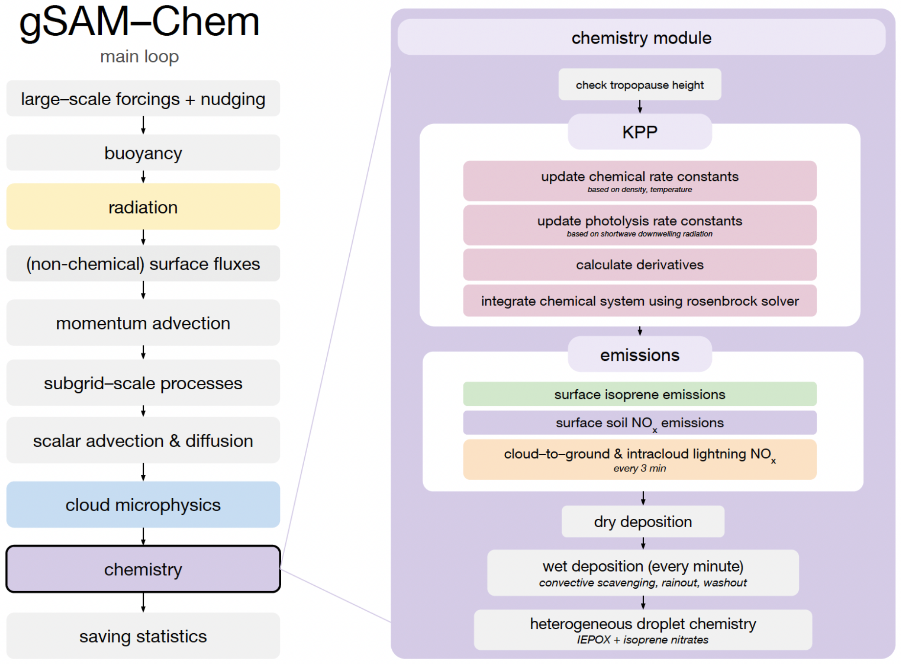

Overview
gSAM–Chem builds on the global System for Atmospheric Modeling (gSAM) version 1.8.7 and adds a new chemistry module that is called at every model time step after the microphysics module (Figure 1 below; Yoon et al., in prep.). The chemistry module checks for the tropopause height (identified as the level with the lowest absolute temperature in the column) and zeros all chemical species above it, since the implemented mechanism is not suitable for stratospheric chemistry.
The current version uses the following physical schemes:
- Turbulence: Smagorinsky-type SGS closure (SGS_TKE)
- Radiation: Two-stream RRTM4PBL
- Advection: Multidimensional Positive Definite Advection Transport Algorithm (ADV_MPDATA) (Smolarkiewicz, 2006)
- Microphysics: Double-moment Morrison et al. (2005) with QuickBeam radar reflectivity submodule
gSAM–Chem's chemistry and associated submodules are called at every model time step. Wet deposition is called every 60 seconds; lightning emissions every 180 seconds. Surface and lightning emissions are updated alongside other surface fluxes, prior to the chemistry module.

Gas-Phase Chemistry
gSAM–Chem is fully KPP-compatible for gas-phase chemistry, compiled using KPP 3.3.0 (Damian et al., 2002). The solver is an implicit RODAS-3 Rosenbrock solver with no mechanism auto-reduction. The solver allows a maximum of 40 integration steps and automatically clips negative concentrations to zero. All chemical species share the same absolute (0.01) and relative (0.005) tolerance.
Any KPP-compatible mechanism can be compiled into gSAM–Chem, making the chemistry module broadly applicable beyond the tropical deep convection case described in the main paper.
CloudChem Mechanism
For tropical deep convection, gSAM–Chem ships with the CloudChem mechanism (Bardakov et al., 2021), which was developed to investigate isoprene and pinene oxidation and particle formation in convective updrafts. gSAM–Chem implements the isoprene oxidation reactions from CloudChem into a Eulerian large eddy simulation for insight into vertical profiles.
The mechanism totals 44 gas-phase reactions and 7 photolysis reactions, covering:
- Isoprene oxidation cascade (ISOP + OH, HO2, NO, RO2, NO3)
- IEPOX and isoprene nitrate formation and loss
- NOx–O3 chemistry
- OH, HO2, H2O2, HNO3, HNO4
- PAN formation and thermal decomposition
- CO and CH4 oxidation
Three reactions were added to the original CloudChem mechanism:
- R42: HNO4 → HO2 + NO2 — peroxynitric acid thermal decomposition, important for NOx partitioning near the surface
- R43: ISOP + NO3 → ISOP1Nit — ensures nighttime isoprene oxidation
- R44: NO2 + O3 → NO3 — increases nighttime NO3 and isoprene oxidation
CloudChem was validated against MOZART-T1 (197 reactions) and RACM (256 reactions) using the BOXMOX box model. With tropical photolysis frequencies, all three mechanisms produce broadly consistent diurnal cycles of isoprene, HCHO, NOx, OH, HO2, and O3. CloudChem achieves this agreement with roughly a quarter of MOZART-T1's reactions.
Photolysis
Photolysis frequencies are derived from representative tropical clear-sky values calculated with the Tropospheric Ultraviolet and Visible (TUV) Radiation model v5.3 (solar zenith angle = 0°, 12 km altitude, 300 DU overhead ozone). These are scaled at runtime by a dynamic SUN parameter:
SUN = (SWdown + SWup) / 1300 W m−2
Because gSAM's shortwave radiation responds to cloud cover, time of day, and season, photolysis rates vary spatially and temporally throughout the simulation — this feedback is particularly important during deep convective events when clouds shade the boundary layer.
Heterogeneous Chemistry
gSAM–Chem includes IEPOX uptake onto aqueous aerosol and isoprene nitrate hydrolysis as heterogeneous sinks. Details are described in Yoon et al. (in preparation).
Emissions
Lightning NOx
Cloud-to-ground and intracloud lightning NOx emissions follow DeCaria et al. (2000, 2005), which provides an explicit vertical distribution of NO. The model activates lightning every 3 minutes.
The vertical distribution f(z) is Gaussian for cloud-to-ground lightning, centered at the −15 °C isotherm (location of maximum negative charge). For intracloud lightning, a bimodal distribution adds a second Gaussian centered at −45 °C to capture the upper-tropospheric lightning channel. NO emissions are deposited only in grid boxes where radar reflectivity exceeds 20 dBZ (cloud-to-ground) or where hydrometeor mixing ratio exceeds 0.01 g kg−1 (intracloud). Radar reflectivities are simulated by the QuickBeam submodule.
Total NO production per flash is set at 460 mol flash−1 for both lightning types (DeCaria et al., 2005).
Soil NOx
Soil NOx follows the Berkeley–Dalhousie Soil NO Parametrization (BDSNP) of Hudman et al. (2012), with the temperature function updated following Wang et al. (2021):
ENO = ENO, baseline × f(T) × g(θ)
where:
- f(T) — temperature dependence; exponential below 30 °C, cubic between 20–40 °C, constant above 40 °C (Wang et al., 2021)
- g(θ) — soil moisture dependence modeled as a Poisson distribution, peaking at θ = 0.3 (water-filled pore space)
gSAM–Chem adds an interactive 2D surface soil moisture variable that evolves at each time step in response to simulated precipitation and a drying time scale. Soil moisture was initialized from MERRA-2 (θ = 0.70 for the wet season, θ = 0.54 for the dry season) and tuned to match ATTO tower observations.
The baseline NO flux was tuned to match NO observations from the ARM Aerosol Observing System (MAOS-A) near Manacapuru, Brazil (2014–2015).
Isoprene Emissions
Surface isoprene emissions use the temperature and shortwave radiation activity factors from MEGAN v2.1 (Guenther et al., 2012):
EISOP = EISOP, baseline × γT × γP
The photosynthetic photon flux density (PPFD) is approximated from gSAM's downwelling shortwave radiation using a PAR fraction of 0.5 and a conversion factor of 2.3 μmol J−1. The baseline isoprene flux was tuned to match daily-averaged isoprene mixing ratios from the Tapajós National Forest (Sarkar et al., 2020).
Dry Deposition
gSAM–Chem applies one-way dry deposition at the surface for select species using compiled, time-invariant deposition velocities. At every chemical time step:
Ci(t+1) = Ci(t) × (1 − vD,i Δt / zh)
| Species | vD (cm s−1) | Source |
|---|---|---|
| NO2 | 0.30 | Adon et al. (2013), forests and savannahs |
| O3 | 0.60 | Adon et al. (2013), wet daytime forests |
| HNO3 | 2.00 | Adon et al. (2013), forests |
| ISOPOOH | 1.00 | Zhang et al. (2022) |
| IEPOX | 1.00 | Zhang et al. (2022) |
| ISOP1Nit | 0.13 | Zhang et al. (2022), isoprene nitrates |
| ISOPDiNit | 0.13 | Zhang et al. (2022), isoprene nitrates |
Deposition currently occurs only in the lowermost grid box (~40 m height). Future versions will implement a big-leaf deposition model with stomatal conductance dependence.
Wet Deposition
Wet deposition is called every 60 seconds and includes three scavenging mechanisms following Brasseur & Jacob (2017):
- Convective scavenging — for cloudy parcels (liquid water > 0.01 g kg−1) with updraft velocity > 5 m s−1 and increasing precipitable water. Uses Henry's law partitioning and a cloudwater-to-precipitation rate constant of 0.01 s−1.
- Rainout — for any cloudy parcel with increasing precipitable water (regardless of updraft speed). Same Henry's law partitioning.
- Washout — for highly soluble species (KH > 104 M atm−1) in non-cloudy parcels below falling precipitation. Uses a washout rate constant of 1 cm−1 and the surface precipitation flux of the column below.
Scavenging uses temperature-corrected Henry's law constants (K0, CR) consistent with GEOS–Chem 14.7.0 for O3, H2O2, HCHO, HNO3, ISOPOOH, IEPOX, isoprene nitrates, and PAN.
Model Specifications
Published results use two 2D simulations (wet and dry season) and one 3D wet season simulation:
| Configuration | Domain | Δx = Δy | Δz (surface) | Period |
|---|---|---|---|---|
| 2D wet season | 512 × 256 | 66.6 m | 40 m | Mar 5–19, 2014 |
| 2D dry season | 512 × 256 | 66.6 m | 40 m | Sep 19 – Oct 3, 2014 |
| 3D wet season | 128 × 128 × 256 | 66.6 m | 40 m | Mar 5–19, 2014 |
Vertical grid spacing begins at 40 m and increases by 1% per level, becoming approximately constant (~90 m) above 5 km, reaching a domain top of 20.5 km. Simulations include a 3-day spin-up period.
Large-scale forcing uses a 3-hourly, 25 mb resolution constrained variational analysis from the ARM Mobile Facility (M1) near Manacapuru, Brazil (Zhang et al., 2001). The 3D wet season simulation ran in ~18 hours per simulation day using 256 cores across 8 compute nodes.
Model Evaluation
gSAM–Chem output was compared to a range of in-situ and airborne observations from Amazonia:
| Dataset | Variables | Location / Period |
|---|---|---|
| NCAR/UCI PTR-ToF-MS (GoAmazon G-1) | Isoprene mixing ratio | T3 site (Manacapuru), IOP1 & IOP2 2014 |
| PTR-ToF-MS eddy covariance | Isoprene flux & mixing ratio | Tapajós National Forest, Jun 2014 |
| ATTO Tower PTR-MS | Isoprene mixing ratio (multi-level) | Amazon Tall Tower Observatory, 2012–2015 |
| ARM AOS NOx monitor | NO, NO2, NOx, NOy | GoAmazon S1 site (Manacapuru), 2014–2015 |
| CAFE–Brazil (NOAH instrument) | NO mixing ratio (0–14 km) | Amazonia, Dec 2022 – Jan 2023 |
gSAM–Chem shows broad agreement with both surface and airborne isoprene and NOx observations across wet and dry seasons. Key known biases include low surface O3 in the lowermost grid boxes (leading to a slightly elevated NO:NO2 ratio) and some overestimation of NO aloft relative to CAFE–Brazil daytime profiles. See Yoon et al. (in preparation) for full details.